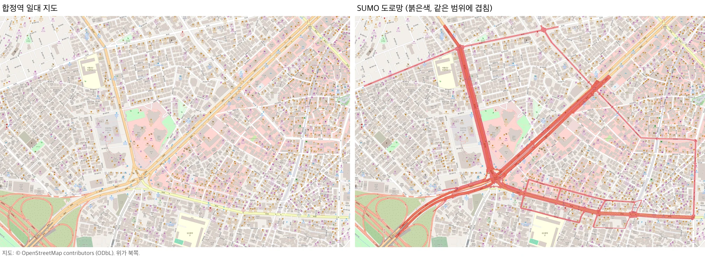
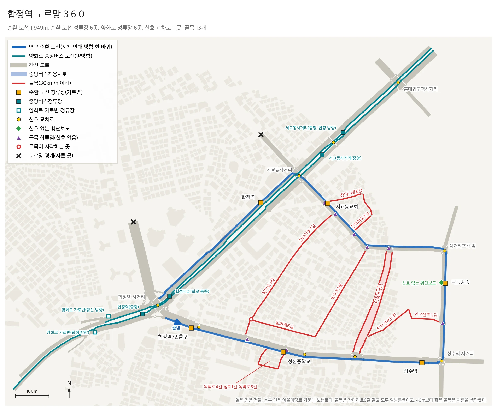
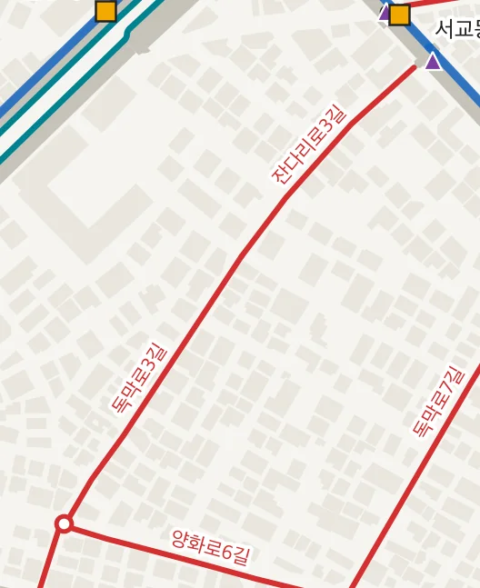
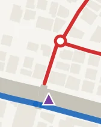
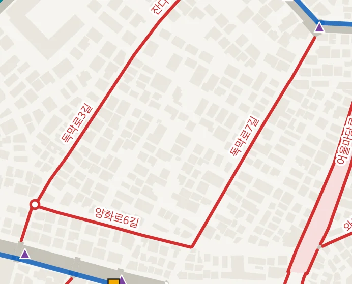

도로 선정과 문제
버스는 합정역을 떠나 독막로로 상수역까지 가고, 와우산로와 잔다리로를 지나 서교동사거리에서 양화로로 좌회전해 돌아온다. 정류장은 모두 가로변 차로에 있고 좌회전은 가장 왼쪽 차로에서만 하므로, 버스는 한 바퀴 내내 가로변과 왼쪽 끝을 오간다.
0.5초마다 옆 차로의 틈을 보고 끼어들지, 속도를 줄여 기다릴지 정하는 버스
| 번호 | 상황 | 버스가 판단할 것 |
|---|---|---|
| S1 | 정류장 출발 후 재합류 | 정차를 마친 뒤 출발 시점 |
| S2 | 좌회전 전 왼쪽 차로 변경 | 옮길 차로의 틈, 기다릴 때의 속도 |
| S3 | 정류장 접근 오른쪽 차로 변경 | 감속 시점과 차로 변경 순서 |
| S4 | 정류장 앞 택시 | 택시 뒤에서 기다릴지 |
| S5 | 골목 차 끼어들기 | 감속과 양보 |
| S6 | 신호 없는 횡단보도 | 보행자 앞에서 설지 |
도로와 SUMO 구현
OpenStreetMap에서 만든 원본에 빌드 스크립트와 수정 스크립트가 실제 지도와 대조해 고친 내용을 차례로 적용했다. 학습, 평가, 수집은 모두 저장소에 커밋된 도로망 하나를 읽고, 도로를 불러올 때 파일 해시로 같은 도로망인지 확인한다.

제한속도는 안전속도 5030에 맞춰 간선 시속 50km, 이면도로 시속 30km로 두었다. 버스는 길이 12m, 폭 2.5m, 가속 1.0m/s², 감속 2.0m/s²이고 정류장마다 8초 선다.
좌회전은 가장 왼쪽 차로에서만
상수역 사거리, 삼거리포차 앞, 서교동사거리, 합정역 사거리의 좌회전은 가장 왼쪽 차로에서만 할 수 있어서, 버스는 합정역 사거리 앞에서 167m 안에 세 차로를 건넌다.

실제 골목 여덟 곳
골목이 없으면 끼어드는 차도 없어서 버스 경로 안쪽의 실제 골목 여덟 곳을 살렸고, 아래 수치는 그때 규칙 버스로 160바퀴를 돌아 잰 값이다.

잔다리로6길
끼어들기 28번시간당 45대

잔다리로3길
끼어들기 21번시간당 19대

독막로6길 고리
끼어들기 14번시간당 47대

와우산로11길
끼어들기 3번시간당 50대

잔다리로2길
끼어들기 3번시간당 25대

독막로3길
끼어들기 3번시간당 18대

어울마당로
끼어들기 2번시간당 20대

독막로7길
끼어들기 0번시간당 25대
도로를 고칠 때마다 30분 시험 300번에서 충돌이나 급정지가 난 횟수를 셌다.
교통 구성
일반 차는 실행 전에 seed로 정해진 route/
| 교통 | 시간당 차량 | 버스 150m 안 차 | 구성 |
|---|---|---|---|
| 한산 | 663대 | 4.9대 | 기준 수요의 0.5배 |
| 보통 | 1,326대 | 10.5대 | 기준 수요 |
| 혼잡 | 1,658대 | 12.4대 | 1.25배 |
| 매우 혼잡 | 1,989대 | 16.3대 | 1.5배 |
| 복합 | 1,989대 | 18.8대 | 1.5배와 같은 총수요에 정류장 택시, 골목 차, 보행자 1.5배 |
차 수만 늘리면 신호 앞 줄만 길어지고 구간 가운데는 비어서, 복합 교통은 총수요를 그대로 두고 일부를 구간 가운데에서 버스와 얽히는 차로 바꿨다.
- 택시가 정류장 4곳의 정류장 차로에 15~30초씩 서서, 정류장 차로가 택시로 차 있는 시간이 25%다.
- 수요의 10%는 골목 두 곳에서 나와 버스 노선으로 합류한다.
- 보행자는 지도의 보행자 흐름 전부를 1.5배로 늘렸다.
- 골목 차와 택시는 버스 노선에서 50m 넘게 떨어진 곳에서만 처음 나타나므로 버스 눈앞에 갑자기 생기는 차는 없다.
차량 추종 모델은 Krauss 35%, IDM 30%, EIDM 20%, ACC 15%를 섞었고, 차로 변경은 차로 안 옆 위치까지 계산하는 SL2015 모델이라 끼어들기가 몇 초에 걸쳐 일어난다.
차량 interaction
평가 13,000바퀴에서 버스가 보는 50m 안에서 다른 차나 보행자와 얽힌 장면을 바퀴당 횟수로 셌다.
| 장면 (바퀴당) | 한산 | 보통 | 혼잡 | 매우 혼잡 | 복합 | 평균 |
|---|---|---|---|---|---|---|
| 정류장 정차 중 뒤 50m 안에 차 (S1) | 0.27 | 0.53 | 0.67 | 0.79 | 1.56 | 0.76 |
| 왼쪽 변경 때 옮길 차로 뒤 30m 안에 차 (S2) | 0.33 | 0.88 | 1.22 | 1.49 | 2.11 | 1.21 |
| 오른쪽 변경 때 옮길 차로 뒤 30m 안에 차 (S3) | 0.61 | 0.84 | 0.91 | 0.95 | 0.93 | 0.85 |
| 앞으로 끼어든 차 (S5) | 0.33 | 0.67 | 0.86 | 0.99 | 1.50 | 0.87 |
| 보행자가 건너던 횡단보도 접근 (S6) | 2.02 | 1.99 | 1.93 | 1.96 | 2.33 | 2.05 |
- 한 바퀴의 차로 변경은 8.5~9.3번이다.
- 복합 교통에서 옮길 차로 30m 안에 차가 있던 변경은 46%다.
- 구간 가운데에서 앞 30m 안에 차가 있는 시간은 12.7%다(매우 혼잡은 4.4%).
- 정류장 앞 택시(S4)를 만난 바퀴는 240바퀴 중 231바퀴다.

눈치싸움 장면
버스와 주변 차가 서로 속도와 간격을 보며 먼저 갈지 기다릴지 정한다. 사람 운전자끼리의 눈치싸움과 닮은, 숫자로는 보이지 않는 장면이다. SUMO 화면은 2배속이다.
AV 학습 설계
| 항목 | 내용 |
|---|---|
| Observation | 46차원 부분 관측(50m 범위). 버스 속도와 가속도, 다섯 차로의 앞뒤 차, 차로 밀도, 차로별 경로 연결 거리, 신호, 정류장, 횡단보도, 제한속도. 신경망은 그중 31개 사용 |
| Action | [가감속, 차로 변경]. 가감속은 +1.0 ~ -2.0m/s², 차로 변경은 {-1, 0, +1}. 0.5초마다 한 번 판단한다. 차로 변경 명령은 수업 원본 환경의 차로 변경 안전 검사(앞뒤 3m와 속도 비례 여유, 출발 60m)를 거치며, 값은 수업 원본과 같다. 조교가 이 검사는 끄지 않아도 된다고 답했다. |
| Reward | 속도 0.1 × v/vmax, 정류장 정차 +1, 정류장 지나침 -3, 충돌 -5, 적색 통과 -5, 도착 +2, 멈춰 섬 -2, 승차감 한계 넘음 -0.02. |
| 종료 | 충돌, 적색 통과, 도착, 멈춰 섬(200초 동안 5m 못 감), 1,400 step(700초). |
| 신경망 | MLP, 은닉층 256 × 2, 가중치 81,514개. 출력은 가속도 11칸과 차로 3가지의 점수 |
차로를 알려 주는 지시는 없고, 버스는 차로마다 노선으로 이어지는 거리만 보고 갈 차로를 정한다. 가속도를 값 하나로 맞히게 하면 서야 할지 가야 할지 모를 때 그 중간값을 내서, 11칸 중 하나를 고르게 바꿨다.
DAgger와 커리큘럼
신경망이 직접 주행한 상태마다 규칙 운전사의 정답을 붙여 다시 학습하고, 교통은 쉬운 것에서 붐비는 것으로 넓혔다. 규칙 운전사는 정답을 붙일 때만 쓰고 주행할 때는 쓰지 않는다.
| 단계 | 교통 | 내용 |
|---|---|---|
| BC | 한산, 보통, 혼잡 | 규칙 운전사가 주행한 300바퀴 기록으로 BC(모방학습) |
| DAgger 1~12회 | 한산, 보통, 혼잡 | 회마다 교통별 25바퀴를 신경망이 직접 운전 |
| DAgger 13~16회 | + 매우 혼잡 | 끼어들기와 대기 줄 상황 추가 |
| DAgger 17~21회 | + 택시·골목 차·보행자 | 정류장 앞 택시와 골목 차 학습 |
| DAgger 22~24회 | 다섯 교통 전부 | 최종 합본 271만 건 |
최종 모델은 마지막 네 단계를 같은 seed 480바퀴에서 돌려, 평가 전에 정한 기준대로 안전 사건(차 충돌, 보행자 충돌, 적색 통과)이 가장 적은 24회 모델(6번)을 골랐다.
평가 결과
다섯 교통에서 학습에 쓰지 않은 seed로 2,600바퀴씩 돌리고, SUMO 안전장치(speed
| 교통 | 바퀴 | 완주 | 완주율 | 차 충돌 | 보행자 충돌 | 적색 통과 | 멈춰 섬 | 시간 초과 |
|---|---|---|---|---|---|---|---|---|
| 한산 | 2,600 | 2,594 | 99.8% | 2 | 0 | 1 | 3 | 0 |
| 보통 | 2,600 | 2,544 | 97.8% | 14 | 0 | 1 | 38 | 3 |
| 혼잡 | 2,600 | 2,519 | 96.9% | 10 | 1 | 1 | 59 | 10 |
| 매우 혼잡 | 2,600 | 2,471 | 95.0% | 16 | 1 | 4 | 87 | 21 |
| 복합 | 2,600 | 2,297 | 88.3% | 34 | 8 | 18 | 170 | 73 |
| 합계 | 13,000 | 12,425 | 95.6% | 76 | 10 | 25 | 357 | 107 |
- 완주율은 복합 교통을 뺀 네 교통에서 97.4%이고, 택시·골목 차·보행자가 함께 나오는 가장 어려운 복합 교통에서도 88.3%다.
- 충돌은 차 76번과 보행자 10번을 합쳐 0.66%이고, 가장 어려운 복합 교통만 보면 1.6%다.
- 차와 버스의 상자가 조금이라도 겹친 바퀴 391개를 모두 충돌로 쳐도 3.7%로 5% 아래다.
- 순간이동을 꺼 두었기 때문에 막힌 경우는 사라지지 않고 "멈춰 섬"으로 남는다.
실패 575바퀴(4.4%)가 난 곳
| 실패 | 횟수 | 비율 | 가장 많은 곳 |
|---|---|---|---|
| 멈춰 섬 | 357 | 2.75% | 서교동사거리 앞 305번. 정류장을 떠난 뒤 좌회전 줄 진입 실패 |
| 시간 초과 | 107 | 0.82% | 합정역 사거리 앞뒤 대기 줄 71번 |
| 차 충돌 | 76 | 0.58% | 합정역 사거리 갈림 지점 31번, 서교동사거리 안 18번 |
| 적색 통과 | 25 | 0.19% | 독막로 11번, 서교동사거리 앞 8번 |
| 보행자 충돌 | 10 | 0.08% | 와우산로 신호 없는 횡단보도 9번 |
주행 영상
평가 기록을 그대로 다시 그린 영상으로, 잘한 장면과 실패한 장면을 함께 싣는다.
실패 장면
실패는 대부분 신호가 바뀌는 순간이나 대기 줄 끝에서 일어난다.
데이터셋
신경망이 탐색 잡음 없이 직접 주행한 13,000바퀴를 0.5초마다 한 건씩 기록해, 실패나 시뮬레이션 이상이 없는 바퀴만 걸러 공개한다(1,290바퀴 제외).
- 묶음마다 전체 항목을 담은 JSONL, 학습용 배열 NPZ, 설정과 컬럼 설명을 담은 metadata.json이 있다.
- 수업 기본 항목에 보행자, 적색 통과, 종료 원인, 정류장 정차, 승차감, 신호와 경로 정보를 더했다.
- 65묶음 모두 NPZ 행 수가 metadata의 건수와 맞고, 올린 뒤 다시 받은 파일의 해시도 원본과 같다.
- 데이터를 모은 신경망
model/model.pt도 함께 올렸다.
데이터 컬럼
수업 기본 수집기의 항목을 모두 담고, 정류장, 보행자, 신호, 승차감을 판단하는 데 필요한 항목을 더했다. 아래 표의 정의는 데이터의 metadata.json에도 그대로 들어 있다.
| 묶음 | 컬럼 | 형태 | 출처 | 뜻 |
|---|---|---|---|---|
| 식별 | episode | Integer | 수업 기본 | Episode 번호 |
t | Integer | 수업 기본 | Episode 내부 timestep (판단 한 번 = decision_interval초) | |
sim_time | Float | 팀 추가 | 관측 시점의 SUMO 시뮬레이션 시각(초). t와 실제 시간 구분용 | |
| 관측 | observation | Vector (46-dim) | 수업 기본 | 시점 t에서 AV Policy가 실제로 입력받는 부분 관측 oₜ. 수업 원본 31개 뒤에 경로 정보 12개와 근접 정보 3개 |
next_observation | Vector (46-dim) | 수업 기본 | 다음 시점의 부분 관측 oₜ₊₁ | |
detected_vehicles | List | 수업 기본 | Observation 시점에 감지된 주변 차량 정보 (관측 차선의 차량과 반경 50m 안의 차량. ego 기준 상대 위치·속도, 방향지시등) | |
detected_pedestrians | List | 팀 추가 | Observation 시점에 감지된 보행자 (ego 기준 상대 위치·속도) | |
| 행동 | action_raw | Vector (2-dim) | 수업 기본 | Policy가 출력한 원본 Action [가감속, 차선변경] |
action.accel_raw | Float | 수업 기본 | 환경에 적용된 가감속 Action 값 | |
action.lane_change_raw | Float | 수업 기본 | 환경에 적용된 차선변경 raw 값 | |
action.lane_change | Integer | 수업 기본 | 실제 명령으로 변환된 차선변경 값 {-1, 0, +1} | |
action.lane_change_applied | Boolean | 수업 기본 | 차선변경 명령이 실제 적용되었는지 여부 | |
| 보상·종료 | reward | Float | 수업 기본 | 시점 t에서 받은 Reward rₜ |
terminated | Boolean | 수업 기본 | 충돌 / 도착 등 환경 자체의 종료 여부 | |
truncated | Boolean | 수업 기본 | 최대 Episode Step 등 시간 제한에 의한 종료 여부 | |
| 상태 | state | Dictionary | 수업 기본 | SUMO 내부의 privileged simulator state sₜ (ego, vehicles, pedestrians, navigation, traffic_light) |
next_state | Dictionary | 수업 기본 | 다음 시점의 privileged simulator state sₜ₊₁ | |
| 이벤트 | event.collided | Boolean | 수업 기본 | 해당 step에서 ego 충돌 발생 여부(차 또는 보행자) |
event.pedestrian_collision | Boolean | 팀 추가 | 해당 step에서 ego가 보행자와 충돌했는지. 참이면 event.collided도 참 | |
event.red_light_violation | Boolean | 팀 추가 | 해당 step에서 ego 앞범퍼가 적색 정지선을 넘었는지 | |
event.arrived | Boolean | 수업 기본 | 목적지 도착 여부 | |
event.lane_before | Integer / String | 수업 기본 | Action 적용 전 AV 차선 | |
event.lane_after | Integer / String | 수업 기본 | Action 적용 후 AV 차선 | |
event.termination_reason | String | 팀 추가 | 종료 원인 (arrived, collision, pedestrian_collision, red_light, time_limit, teleport, missing, stuck). collision은 차와의 충돌이다. stuck은 ego가 stuck_timeout초 동안 stuck_progress_m도 못 간 것. 종료가 아니면 빈 값 | |
event.background_collisions | Integer | 팀 추가 | 이 step 동안 ego가 끼지 않은 충돌 수(배경 차량끼리, 배경 차량과 보행자) | |
event.service_event | String | 팀 추가 | 이 step에 정차할 정류장을 마쳤으면 served, 서지 않고 지나쳤으면 missed, 아니면 빈 값 | |
event.stops_served | Integer | 팀 추가 | 에피소드에서 지금까지 정차를 마친 정류장 수 | |
event.stops_missed | Integer | 팀 추가 | 에피소드에서 지금까지 서지 않고 지나친 정차 정류장 수 | |
| 승차감 | comfort.peak_acceleration | Float | 팀 추가 | 이 step 동안 버스 가속도 크기의 최댓값 (m/s²). 승객 승차감 |
comfort.peak_jerk | Float | 팀 추가 | 이 step 동안 버스 jerk(가속도 변화율) 크기의 최댓값 (m/s³). 승객 승차감 | |
comfort.acceleration_violation | Boolean | 팀 추가 | 가속도가 승차감 한계를 넘었는지 | |
comfort.jerk_violation | Boolean | 팀 추가 | jerk가 승차감 한계를 넘었는지 |
state와 next_state에는 버스, 버스 150m 안의 차와 보행자, 노선 정보, 앞 신호가 들어 있다. 위치는 m, 속도는 m/s, 방향은 북쪽 0도에서 시계 방향(도)이다.
| 키 | 담은 것 | 하위 항목 |
|---|---|---|
state.ego | 버스 | id, alive, x, y, speed, acceleration, jerk, heading, road_id, lane_id, lane_index, lane_position, lateral_position, lateral_speed, signals |
state.vehicles | 버스 150m 안의 차 | id, x, y, speed, heading, road_id, lane_id, lane_index, lane_position, lateral_position, lateral_speed, signals |
state.pedestrians | 버스 150m 안의 보행자 | id, x, y, speed, heading, road_id |
state.navigation | 노선 정보 | route_id, route_edge_index, drivable_lane_ids, target_lane_ids, next_turn, distance_to_turn, crossing_id, distance_to_crossing, next_stop_id, distance_to_stop, distance_to_destination |
state.traffic_light | 앞 신호 | id, link_index, state, distance_to_stop_line |
관측 46개 이름과 뜻 보기
모든 값은 -1에서 1 사이다. 거리는 50m, 속도는 제한속도로 나누고, 노선 연결 거리만 200m로 나눈다. 신경망은 "가림"으로 표시한 15개를 0으로 가리고 31개를 쓴다.
| 번호 | 이름 | 뜻 | 구분 | 신경망 |
|---|---|---|---|---|
| 0 | ego_speed | 버스 속도 | 수업 원본 | 씀 |
| 1 | left2_leader_gap | 왼쪽 두 칸 차로 앞차 간격 | 수업 원본 | 가림 |
| 2 | left2_leader_relative_speed | 왼쪽 두 칸 차로 앞차 상대 속도 | 수업 원본 | 가림 |
| 3 | left2_follower_gap | 왼쪽 두 칸 차로 뒤차 간격 | 수업 원본 | 가림 |
| 4 | left2_follower_relative_speed | 왼쪽 두 칸 차로 뒤차 상대 속도 | 수업 원본 | 가림 |
| 5 | left1_leader_gap | 왼쪽 한 칸 차로 앞차 간격 | 수업 원본 | 씀 |
| 6 | left1_leader_relative_speed | 왼쪽 한 칸 차로 앞차 상대 속도 | 수업 원본 | 씀 |
| 7 | left1_follower_gap | 왼쪽 한 칸 차로 뒤차 간격 | 수업 원본 | 씀 |
| 8 | left1_follower_relative_speed | 왼쪽 한 칸 차로 뒤차 상대 속도 | 수업 원본 | 씀 |
| 9 | current_leader_gap | 내 차로 앞차 간격 | 수업 원본 | 씀 |
| 10 | current_leader_relative_speed | 내 차로 앞차 상대 속도 | 수업 원본 | 씀 |
| 11 | current_follower_gap | 내 차로 뒤차 간격 | 수업 원본 | 가림 |
| 12 | current_follower_relative_speed | 내 차로 뒤차 상대 속도 | 수업 원본 | 가림 |
| 13 | right1_leader_gap | 오른쪽 한 칸 차로 앞차 간격 | 수업 원본 | 씀 |
| 14 | right1_leader_relative_speed | 오른쪽 한 칸 차로 앞차 상대 속도 | 수업 원본 | 씀 |
| 15 | right1_follower_gap | 오른쪽 한 칸 차로 뒤차 간격 | 수업 원본 | 씀 |
| 16 | right1_follower_relative_speed | 오른쪽 한 칸 차로 뒤차 상대 속도 | 수업 원본 | 씀 |
| 17 | right2_leader_gap | 오른쪽 두 칸 차로 앞차 간격 | 수업 원본 | 가림 |
| 18 | right2_leader_relative_speed | 오른쪽 두 칸 차로 앞차 상대 속도 | 수업 원본 | 가림 |
| 19 | right2_follower_gap | 오른쪽 두 칸 차로 뒤차 간격 | 수업 원본 | 가림 |
| 20 | right2_follower_relative_speed | 오른쪽 두 칸 차로 뒤차 상대 속도 | 수업 원본 | 가림 |
| 21 | left2_route_connectivity | 왼쪽 두 칸 차로 노선으로 이어지는 거리 | 수업 원본 | 가림 |
| 22 | left1_route_connectivity | 왼쪽 한 칸 차로 노선으로 이어지는 거리 | 수업 원본 | 씀 |
| 23 | current_route_connectivity | 내 차로 노선으로 이어지는 거리 | 수업 원본 | 씀 |
| 24 | right1_route_connectivity | 오른쪽 한 칸 차로 노선으로 이어지는 거리 | 수업 원본 | 씀 |
| 25 | right2_route_connectivity | 오른쪽 두 칸 차로 노선으로 이어지는 거리 | 수업 원본 | 가림 |
| 26 | left2_density | 왼쪽 두 칸 차로 50m 안 차 밀도 | 수업 원본 | 가림 |
| 27 | left1_density | 왼쪽 한 칸 차로 50m 안 차 밀도 | 수업 원본 | 씀 |
| 28 | current_density | 내 차로 50m 안 차 밀도 | 수업 원본 | 씀 |
| 29 | right1_density | 오른쪽 한 칸 차로 50m 안 차 밀도 | 수업 원본 | 씀 |
| 30 | right2_density | 오른쪽 두 칸 차로 50m 안 차 밀도 | 수업 원본 | 가림 |
| 31 | tl_distance | 다음 신호 정지선까지 거리 | 경로 정보 | 씀 |
| 32 | tl_red | 그 신호가 적색인지 | 경로 정보 | 씀 |
| 33 | tl_yellow | 황색인지 | 경로 정보 | 씀 |
| 34 | tl_yield | 비보호(양보) 녹색인지 | 경로 정보 | 가림 |
| 35 | stop_distance | 다음 정류장까지 거리 | 경로 정보 | 씀 |
| 36 | stop_dwell_remaining | 남은 정차 시간 | 경로 정보 | 씀 |
| 37 | crosswalk_distance | 다음 횡단보도까지 거리 | 경로 정보 | 씀 |
| 38 | crosswalk_occupied | 보행자가 건너는 중인지 | 경로 정보 | 씀 |
| 39 | speed_limit | 지금 제한속도 | 경로 정보 | 씀 |
| 40 | next_speed_limit | 다음 제한속도 | 경로 정보 | 씀 |
| 41 | next_speed_limit_distance | 다음 제한속도까지 거리 | 경로 정보 | 씀 |
| 42 | ego_acceleration | 버스 가속도 | 경로 정보 | 씀 |
| 43 | stop_distance_near | 다음 정류장까지 거리(가까운 범위) | 근접 정보 | 씀 |
| 44 | current_leader_gap_far | 내 차로 앞차 간격(먼 범위) | 근접 정보 | 씀 |
| 45 | tl_yellow_elapsed | 황색이 켜진 뒤 지난 시간 | 근접 정보 | 씀 |
실행 방법
Python 3.10과 SUMO 1.27.1에서 확인했다. SUMO는 따로 설치하고 SUMO_HOME을 설정한 뒤 패키지를 설치한다.
git clone https://github.com/kiyong-jung/Artificial-Intelligence-and-Control-for-Autonomous-Driving.git
cd Artificial-Intelligence-and-Control-for-Autonomous-Driving
pip install -r requirements.txt저장소에 들어 있는 최종 모델로 복합 교통 4바퀴를 돌리면, 평가 기록과 같은 결과(4바퀴 모두 완주)가 나온다.
PYTHONPATH=. python research/av_bc_rl/evaluate.py --policy bc --model models/final/model.pt \
--label final --seed 63000 --scenarios rich2 --episodes 4 --workers 4데이터 수집, 처음부터 학습하기, 저장소 구조는 README에 정리했다.
문제와 해결
| 영역 | 문제 | 해결 | 결과 |
|---|---|---|---|
| 도로 | 붙어 있는 교차로에서 급정지와 충돌 | 교차로를 합치고 차로를 한 차로씩 이음 | 급정지 40번에서 0번 |
| 교통 | 대기 줄의 선 차가 돌아 뒤차와 겹침 | 선 차의 옆 이동을 끔 | 26대에서 0대 |
| 교통 | 구간 가운데에 차가 없음 | 정류장 택시와 골목 차를 수요로 넣음 | 앞차 있는 시간 12.7% |
| 학습 | 모방학습만으로는 30바퀴 중 26바퀴 완주 | DAgger로 벗어난 상태의 정답을 더함 | 10회 뒤 60바퀴 모두 완주 |
| 학습 | 황색에서 어정쩡하게 줄이다 넘음 | 가속도를 11칸 중 고르게 함 | 적색 통과 0.19% |
| 데이터 | 실패·이상 바퀴가 섞임 | 바퀴 단위 걸러내기 | 실패·이상 없는 바퀴만 공개(1,290바퀴 제외) |
결론과 한계
결론
- 가로변 정류장과 가장 왼쪽 차로 좌회전이 번갈아 나와서 버스는 한 바퀴에 차로를 8~9번 바꿔야 한다.
- 그 사이에 정류장 출발과 접근, 좌회전 전 끼어들기, 정류장 앞 택시, 골목 차, 신호 없는 횡단보도를 만난다.
- 신경망 하나가 규칙 보조 없이 13,000바퀴 중 95.6%를 완주했고, 충돌은 0.66%였다.
- 그 주행 1,086만 건을 정류장, 보행자, 신호, 승차감 항목과 함께 공개했다.
한계
- 실패 575바퀴 중 305바퀴가 서교동사거리 앞에서 멈춰 선 것인데, 규칙 운전사도 같은 곳에서 멈추기 때문에 따라 배우는 방식으로는 줄이지 못했다.
- 차로 변경의 88%가 일어나는 구간 가운데는 아직 신호 앞보다 차가 절반도 안 된다.
- 규칙 운전사가 스스로 완주하지 못하는 1.75배 이상의 교통은 가르칠 수 없다.